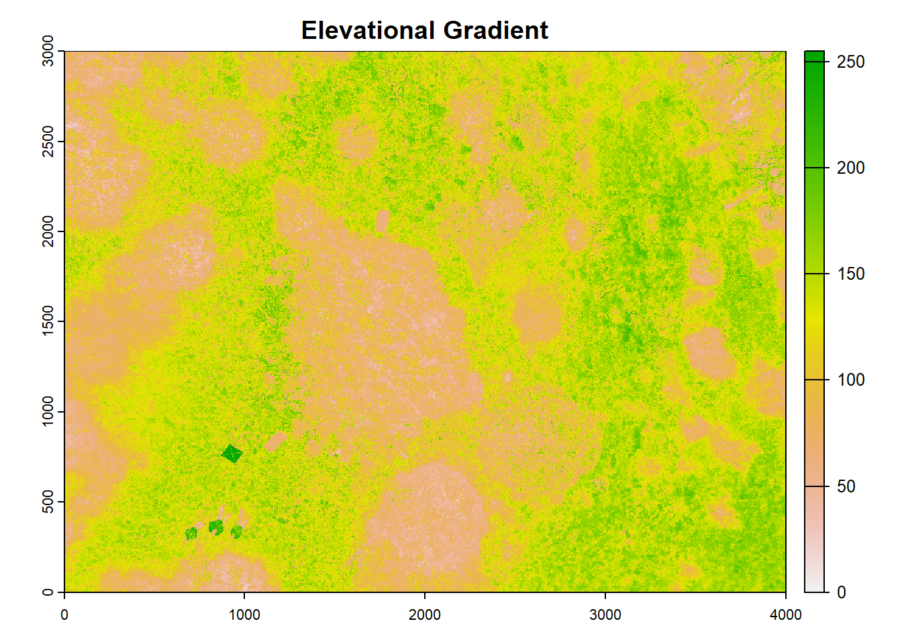
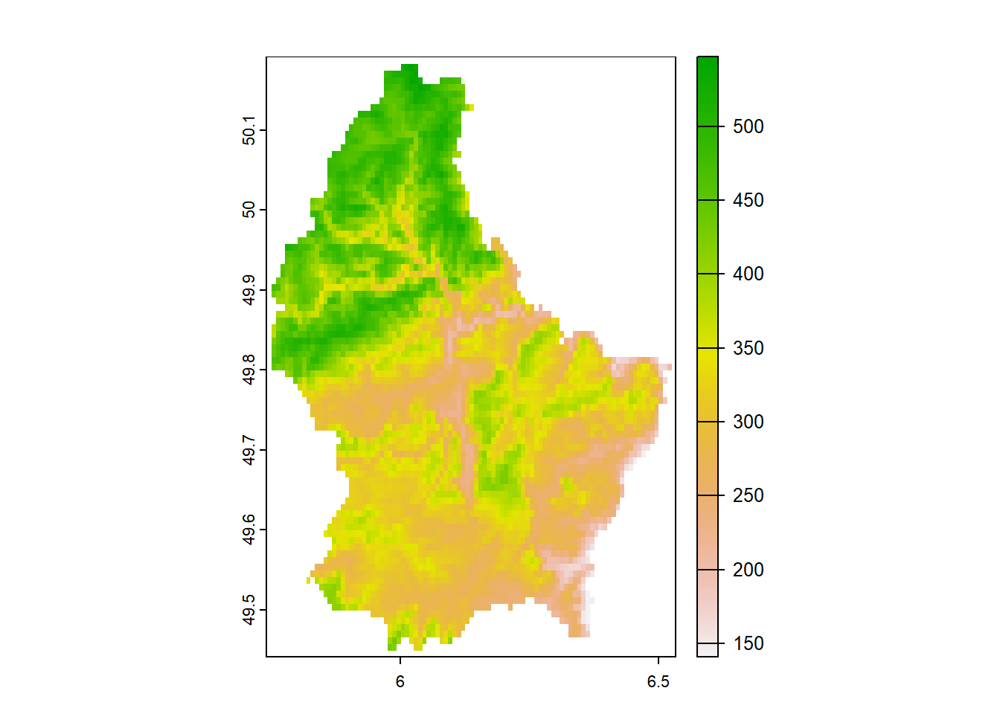
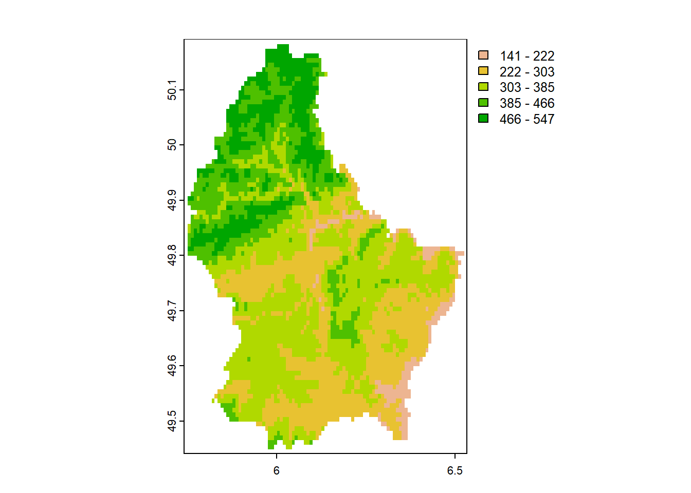
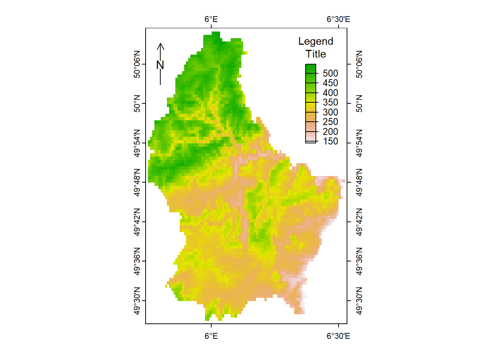
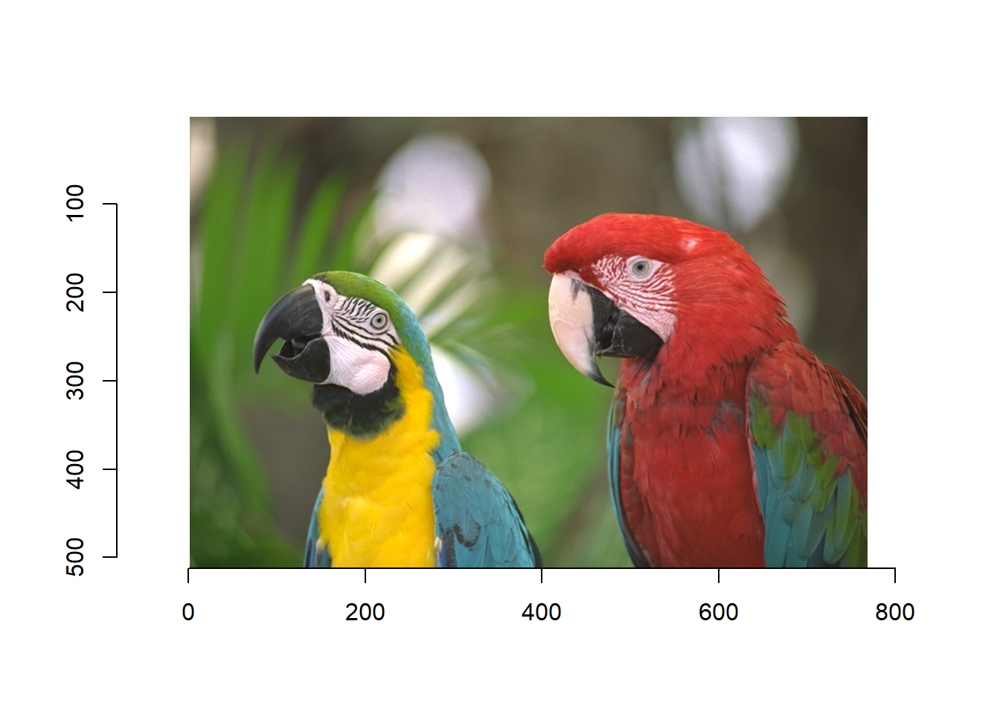
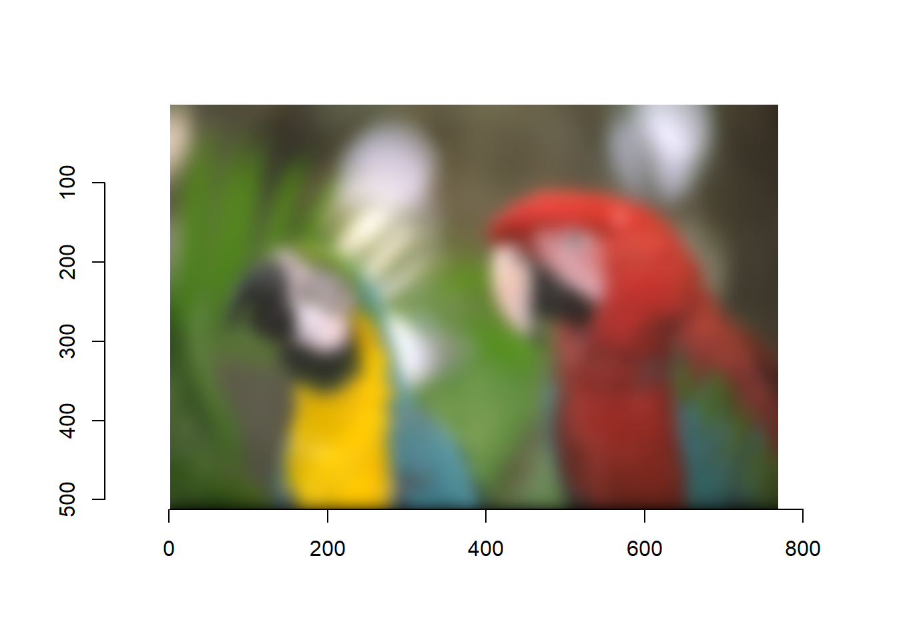
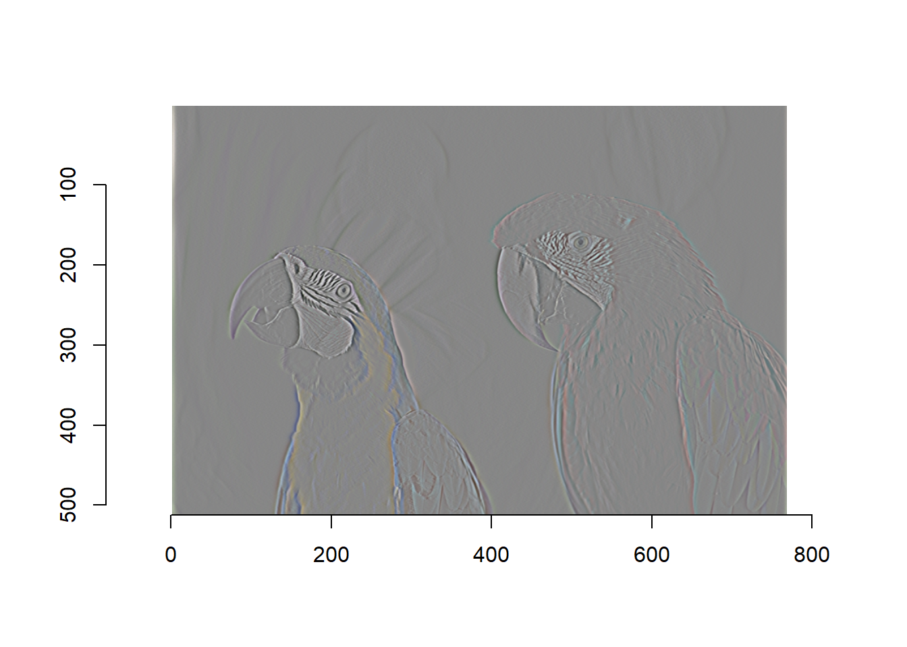
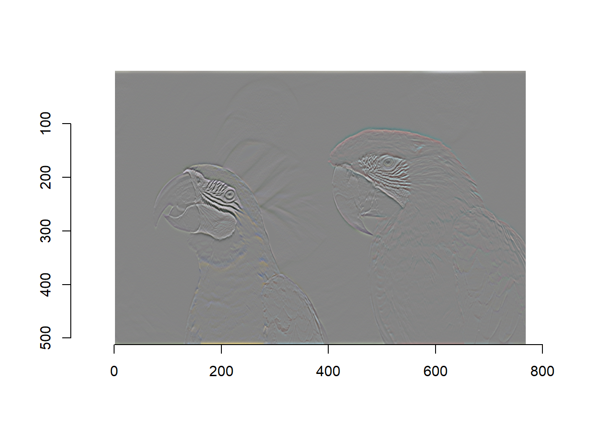

Here’s the R code for following along: Rastering.R
As we saw previously in our presentation, a raster allows us to pixelate an image and have each pixel contain a value or class.
This has recently changed due to sp no longer being supported by R Studio within the last month. Due to this, we will no longer be using “library(raster)” but will use “library(terra).” This new package will do the same as the raster package but is supported.
You can download the image file here
###Terra-Rastering
### Rastering an image with the Terra package-----------------
##Load correct packages
library(terra)## terra 1.7.46## Warning: [rast] unknown extent###Plot-------------------------
plot(drone, y=1, main="Elevational Gradient", grid=FALSE, breaks=NULL, legend=TRUE, maxcell=500000)
For plotting this raster:
“y” is missing or positive integer or name indicating the layer(s) to be plotted.
“main” is the title.
“grid” if TRUE grid lines are drawn. Their properties such as type and color can be set with the pax argument.
“breaks” is either a single number to indicate the number of breaks desired, or the actual breaks. “legend” is a logical or character. If not FALSE a legend is drawn. The character value can be used to indicate where the legend is to be drawn. For example “topright” or “bottomleft”.
“maxcell” is a positive integer. Maximum number of cells to use for the plot.
###Different forms of rastering
### Different forms of Rastering -----------------
#Information from: https://rspatial.github.io/terra/reference/plot.html
## SpatRaster
f <- system.file("ex/elev.tif", package="terra")
r <- rast(f)
plot(r)

#Plotting with coordinates
e <- c(6.37, 6.41, 49.9, 50.1)
plot(r, plg=list(ext=e, title="Legend\nTitle", title.cex=0.9),
pax=list(side=1:4, retro=TRUE))
north(cbind(5.8, 50.1)) 
### Extra cool things that can be done with the new terra package -----------------
#Information from: https://dahtah.github.io/imager/imager.html
library(imager)## Warning: package 'imager' was built under R version 4.3.2## Loading required package: magrittr##
## Attaching package: 'magrittr'## The following objects are masked from 'package:terra':
##
## extract, inset##
## Attaching package: 'imager'## The following object is masked from 'package:magrittr':
##
## add## The following objects are masked from 'package:terra':
##
## depth, width## The following objects are masked from 'package:stats':
##
## convolve, spectrum## The following object is masked from 'package:graphics':
##
## frame## The following object is masked from 'package:base':
##
## save.imagefile <- system.file('extdata/parrots.png',package='imager')
#system.file gives the full path for a file that ships with a R package
#if you already have the full path to the file you want to load just run:
#im <- load.image("/somedirectory/myfile.png")
im <- load.image(file)
plot(im) #Parrots!



file <- system.file('extdata/parrots.png',package='imager')
parrots <- load.image(file)
#The file format is defined by the extension. Here we save as JPEG
imager::save.image(parrots,"parrots.jpeg")
#We call imager::save.image to avoid ambiguity, as base R already has a save.image function ```
All of these can be helpful within resource selection as we can take ArcGIS images or drone images to understand our study area!
{kind=link}